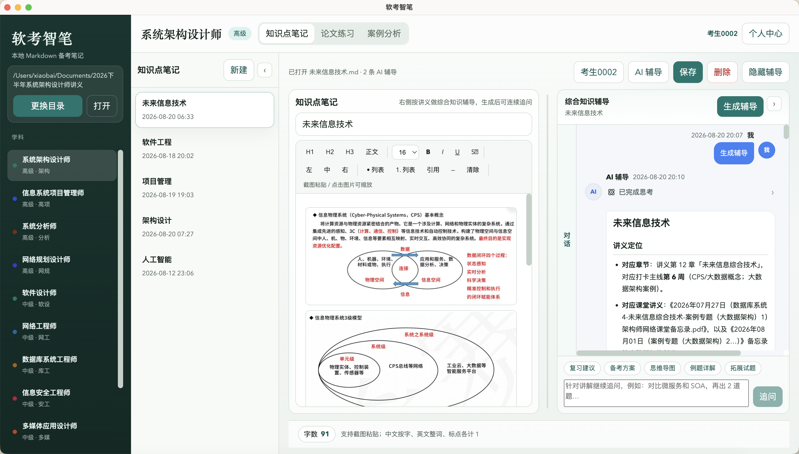
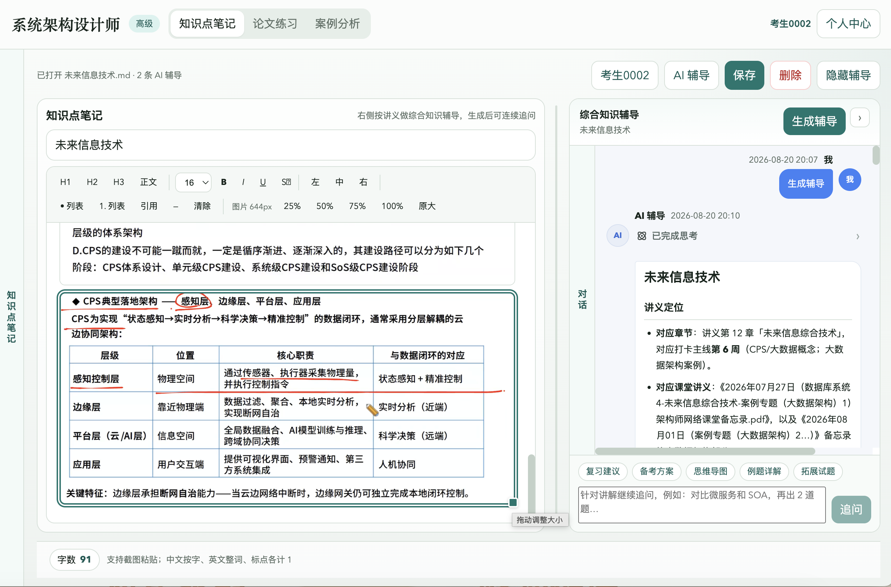
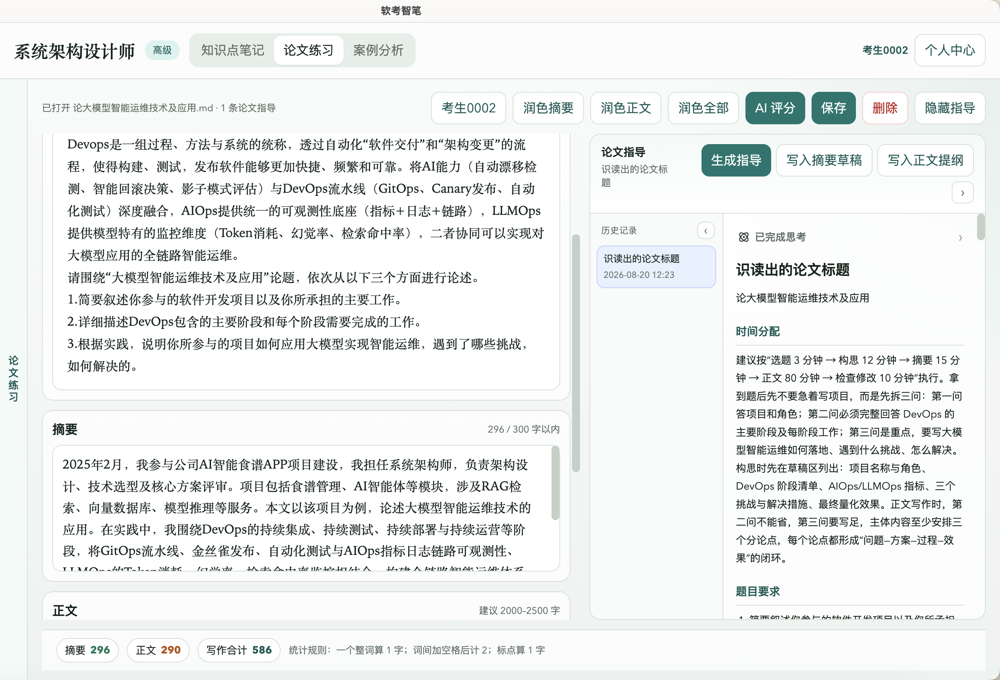
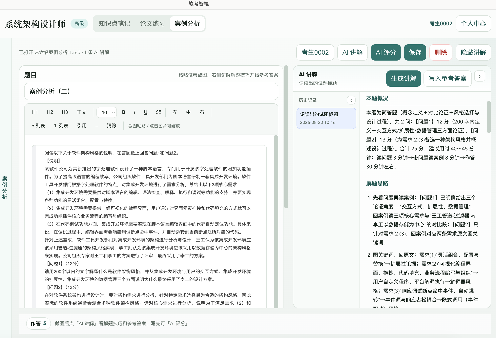
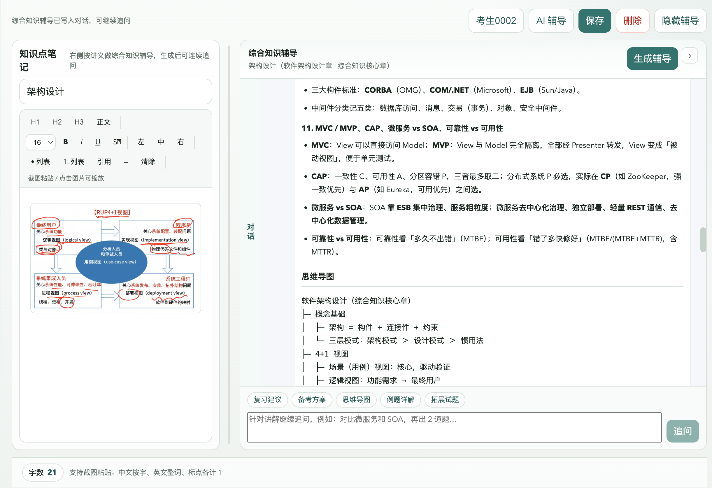

知
知识点笔记
按科目整理综合知识。支持富文本、粘贴截图、拖动排序。文件就是本机 Markdown。
软考智笔是桌面备考工作区。知识点、论文、案例按科目分开放； 编辑保存不强制登录。需要 AI 辅导、润色、评分时再邮箱验证码登录。

选本地文件夹，选科目，开始写。AI 是加分项，不是门槛。
按科目整理综合知识。支持富文本、粘贴截图、拖动排序。文件就是本机 Markdown。
题目、摘要、正文分区编辑。摘要约 300 字提示，正文按考试向字数显示。润色需确认才写回。
粘贴题图、按题作答。可识图解答、评分和流式讲解，适合下午案例题。
综合知识讲解与追问、论文指导与评分、案例解题思路。会话按登录邮箱隔离。
根目录由你指定。服务端不托管笔记正文。换电脑带走文件夹即可。
预置高项、架构、软设等常见科目。停用科目不会出现在列表里，本地旧文件仍保留。
安装之后，不注册也能记笔记。
作为笔记仓库。系统会按科目创建 notes、essays、cases 目录。
在知识点、论文、案例三个页签之间切换，互不覆盖。
邮箱验证码登录后，才能使用辅导、润色、评分和讲解。
下列为截图占位。请将对应 PNG 放到 images 目录，文件名保持不变即可显示。




高级、中级、初级均可作为独立目录使用。
将安装包放到 downloads 目录并保持文件名，按钮即可直接下载。版本 V1.0。
使用前可以先看这几条。
不会默认同步。文稿保存在你选择的本地文件夹中。只有在使用 AI 时，当前题目、笔记节选或截图才会发给服务端做辅导。
能。新建、保存、排序、删除笔记都不需要登录。综合知识辅导、论文润色评分指导、案例识图评分讲解需要邮箱验证码登录。
不是。论文评分按辅导用 75 分制，仅作备考参考，不代表软考官方成绩。
Windows 10 及以上，macOS 12 及以上。